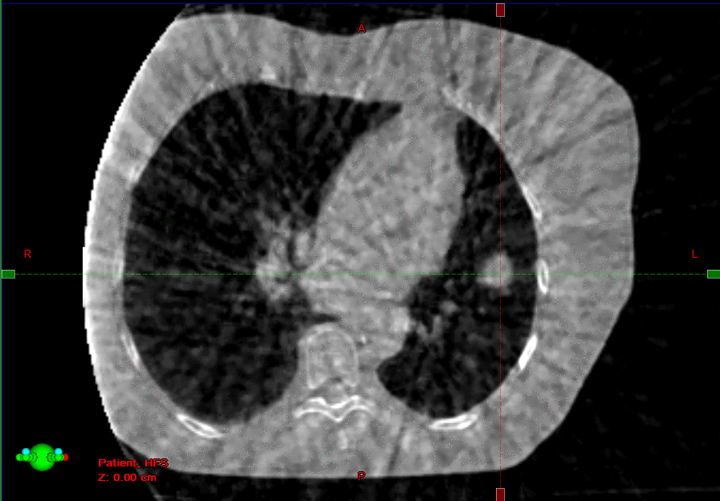
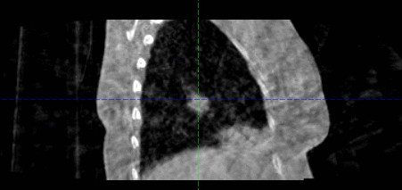
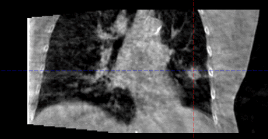

<!DOCTYPE html>
<html lang="zh-CN">

<head>
	<meta charset="UTF-8">
	<meta name="viewport" content="width=device-width, initial-scale=1.0, maximum-scale=1.0, user-scalable=no">
	<title>触屏展示台子页面</title>
	<script src="./js/tailwindcss.js"></script>
	<!-- 引入自定义字体 -->
	<style>
		@font-face {
			font-family: 'SHBreeHeadlineGlobal';
			src: url('./Fonts/sh-bree-headlineglobal-regular.ttf') format('truetype');
		}
	</style>
	<script>
		tailwind.config = {
			theme: {
				extend: {
					colors: {
						primary: '#4a6fa5',
						secondary: '#e67e22',
					}
				}
			}
		}
	</script>
	<style type="text/tailwindcss">
		@layer utilities {
		.page-container {
			position: relative;
			width: 100%;
			height: 100vh;
			overflow: hidden;
			touch-action: none; /* 防止浏览器默认滚动干扰 */
		}
		.bg-image {
			position: absolute;
			top: 0;
			left: 0;
			width: 100%;
			height: 100%;
			background-size: cover;
			background-position: center;
			z-index: -1;
		}
		.nav-button {
			position: absolute;
			z-index: 10;
			cursor: pointer;
			opacity: 0.9;
			transition: opacity 0.1s;
		}
		.logo {
			right:50px;
			top: 50px;
			width: clamp(128px, 16vw, 512px);
			height: auto;
		}
		.nav-button:hover {
			opacity: 1;
		}
		.back-button {
			right:50px;
			bottom: 50px;
			width: clamp(64px, 8vw, 256px);
			height: clamp(64px, 8vw, 256px);
			top: auto;
		}
		.page-button {
			position: absolute;
			width: clamp(32px, 6vw, 150px);
			height: clamp(32px, 6vw, 150px);
			top: 50%;
			transform: translateY(-50%);
			z-index: 10;
			cursor: pointer;
			opacity: 0.8;
			transition: opacity 0.3s;
		}
		.page-button:hover {
			opacity: 1;
		}
		.left-button {
			left: 20px;
		}
		.right-button {
			right: 20px;
		}
		.right-button img {
			transform: scaleX(-1);
		}
		.content-container {
			position: absolute;
			top: 100px;
			left: 0;
			/* width: 100%; */
			min-width: 100dvw;
			max-width: 100dvw;
			bottom: 40px;
			overflow: hidden;
			touch-action: pan-y;
		}
		.content-wrapper {
			position: absolute;
			top: 0;
			left: 0;
			height: 100%;
			display: flex;
			transition: transform 0.5s ease;
		}
		.svg-container {
			min-width: 100dvw;
			max-width: 100dvw;
			flex: 0 0 100%;
			height: 100%;
			display: flex;
			flex-direction: column;
			justify-content: flex-start;
			align-items: center;
			/* padding: 40px; */
			box-sizing: border-box;
			overflow: hidden; /* 防止内容溢出 */
			position: relative; /* 为内部绝对定位提供参考 */
		}
		.content-inner-wrapper {
			width: 100%;
			height: 100%;
			/* padding: 20px; */
			box-sizing: border-box;
			display: flex;
			flex-direction: column;
			justify-content: flex-start;
			align-items: center;
		}
		.page-title {
			font-family: 'SHBreeHeadlineGlobal', sans-serif;
			font-size: clamp(2rem, 4vw, 5rem); /* 响应式字体大小 */
			font-weight: bold;
			color: #EC6600;
			padding: 50px 32px 0 32px;
			width: 100%;
			max-width: 100%;
			/* text-align: center; */
			word-wrap: break-word; /* 长文本自动换行 */
			overflow-wrap: break-word;
			margin-bottom: 10px;
			box-sizing: border-box;
		}
		.page-subtitle {
			font-size: clamp(1.2rem, 2.5vw, 3rem); /* 响应式字体大小 */
			color: white;
			width: 100%;
			max-width: 100%;
			padding: 0 32px;
			word-wrap: break-word; /* 长文本自动换行 */
			overflow-wrap: break-word;
			margin-bottom: 50px;
			box-sizing: border-box;
		}
		.media-wrapper,
		.svg-wrapper {
			width: 100%;
			/* margin: 10px; */
			flex: 1 1 auto;
			display: flex;
			justify-content: center;
			align-items: center;
			box-sizing: border-box;
			overflow: hidden;
		}
		.media-content,
		.svg-content {
			width: 100%;
			height: auto;
			max-width: 100%;
			max-height: 100%;
			object-fit: contain;
			pointer-events: none;
			box-sizing: border-box;
		}
		.media-content.media-content-video {
			height: 100%;
		}
		.media-fallback {
			width: 100%;
			color: white;
			font-size: clamp(1rem, 2vw, 2.5rem);
			text-align: center;
		}
		.page-indicator {
			position: absolute;
			bottom: 20px;
			left: 50%;
			transform: translateX(-50%);
			display: flex;
			gap: 10px;
			z-index: 10;
		}
		.indicator-dot {
			width: 10px;
			height: 10px;
			border-radius: 50%;
			background-color: rgba(255, 255, 255, 0.5);
			transition: background-color 0.3s;
		}
		.indicator-dot.active {
			background-color: white;
		}
		/* 特殊视频样式 - 基础样式（共用部分） */
		.special-video-wrapper {
			position: absolute;
			left: 50%;
			transform: translate(-50%, -50%);
			z-index: 15;
			display: flex;
			justify-content: center;
			align-items: center;
		}
		.special-video {
			width: 100%;
			height: 100%;
			object-fit: contain;
		}
		/* 特殊视频样式 - 探索创新方案第3页（不同部分） */
		.special-video-wrapper-2-4 {
			top: 51%;
			width: 70svw;
		}
		/* 特殊视频样式 - 探索创新方案第5页（不同部分） */
		.special-video-wrapper-2-6 {
			top: 38%;
			width: 80svw;
		}
		/* 特殊视频样式 - 肺癌脑转移放射外科第3页（不同部分） */
		.special-video-wrapper-2-20 {
			top: 38%;
			width: 80svw;
		}

		/* 肺癌放射外科第2页 - GIF滚动展示区域 */
		.gif-scroll-wrapper-1-15 {
			position: absolute;
			top: 51.5%;
			left: 15%;
			width: 500px;
			height: 320px;
			z-index: 15;
			display: flex;
			justify-content: center;
			align-items: center;
			overflow: hidden;
		}

		.gif-container {
			width: 100%; 
			height: 100%;
			display: flex;
			align-items: center;
			justify-content: center;
		}

		.gif-image {
			width: 100%;
			height: 100%;
			object-fit: contain;
			position: absolute;
			opacity: 0;
			transition: opacity 0.3s ease;
		}

		.gif-image.gif-active {
			opacity: 1;
			z-index: 3;
		}

		/* GIF翻页按钮样式 */
		.gif-nav-button {
			position: absolute;
			top: 50%;
			transform: translateY(-50%);
			width: 40px;
			height: 40px;
			cursor: pointer;
			z-index: 16;
			opacity: 0.8;
			transition: opacity 0.3s ease;
		}

		.gif-nav-button:hover {
			opacity: 1;
		}

		.gif-left-button {
			left: 0px;
		}

		.gif-right-button {
			right: 0px;
		}

		.gif-nav-icon {
			width: 100%;
			height: 100%;
			object-fit: contain;
		}

		/* 肺癌放射外科第2页 - 右侧第一个视频 */
		.special-video-wrapper-1-16 {
			top: 39.2%;
			left: 70%;
			width: 650px;
			z-index: 15;
			display: flex;
			justify-content: center;
			align-items: center;
		}

		/* 肺癌放射外科第2页 - 右侧第二个视频 */
		.special-video-wrapper-1-17 {
			top: 58.5%;
			left: 70%;
			width: 650px;
			z-index: 15;
			display: flex;
			justify-content: center;
			align-items: center;
		}
		/* 特殊图片样式 - 肺癌脑转移放射外科第1页（不同部分） */
		.special-image-wrapper-2-18 {
			top: 33%;
			width: 50svw;
		}
		.special-image {
			width: 100%;
			height: 100%;
			object-fit: contain;
		}
		/* 响应式媒体查询 */
		@media (max-width: 768px) {
			.content-inner-wrapper {
				padding: 15px;
			}
			.page-title {
				font-size: clamp(1.5rem, 3vw, 3rem);
			}
			.page-subtitle {
				font-size: clamp(1rem, 2vw, 2rem);
			}
		}
		@media (max-width: 480px) {
			.content-container {
				padding: 10px;
			}
			.svg-container {
				padding: 10px;
			}
			.content-inner-wrapper {
				padding: 10px;
			}
			.page-title {
				font-size: clamp(1.2rem, 2.5vw, 2.5rem);
			}
			.page-subtitle {
				font-size: clamp(0.9rem, 1.8vw, 1.8rem);
			}
		}
	}
	</style>
</head>

<body class="bg-black">
	<div class="page-container">
		<!-- 背景图片 -->
		<div class="bg-image" style="background-image: url('./img/bg/bg.jpg')"></div>

		<!-- 返回按钮 -->
		<div class="nav-button back-button" onclick="getReturnUrl()">
			
		</div>

		<!-- Logo -->
		<div class="nav-button logo">
			
		</div>

		<!-- 左翻页按钮 -->
		<div class="page-button left-button" id="leftButton">
			
		</div>

		<!-- 右翻页按钮 -->
		<div class="page-button right-button" id="rightButton">
			
		</div>

		<!-- 内容容器 -->
		<div class="content-container">
			<div class="content-wrapper" id="contentWrapper">
				<!-- 内容由JS加载 -->
			</div>
		</div>

		<!-- 页码指示器 -->
		<div class="page-indicator" id="pageIndicator"></div>
	</div>

	<script src="./js/jquery-1.8.3.min.js"></script>
	<script>
		$(document).ready(function () {
			let pageData = [];
			let currentPage = 0;
			let totalPages = 0;
			let pageType = '';
			let fromPage = '';

			init();

			function init() {
				const urlParams = new URLSearchParams(window.location.search);
				const pageParam = urlParams.get('page');
				pageType = urlParams.get('type') || ''; // 获取页面参数
				fromPage = urlParams.get('from') || ''; // 获取来源页面参数
				currentPage = pageParam ? parseInt(pageParam) - 1 : 0;
				loadPageData();
			}

			function loadPageData() {
				$.getJSON('./data.json', function (data) {
					// 检查页面类型是否存在
					if (pageType && data.hasOwnProperty(pageType)) {
						pageData = data[pageType];
						totalPages = pageData.length;
						if (currentPage < 0) currentPage = 0;
						if (currentPage >= totalPages) currentPage = totalPages - 1;
						renderPageContent();
						renderPageIndicator();
						bindEvents();
						updatePageButtons(); // 初始化时更新按钮显示状态
					} else {
						// 如果页面类型不存在，弹出提示并返回到首页
						alert('访问的页面不存在！');
						window.location.href = './index.html';
					}
				}).fail(() => {
					console.error('加载页面数据失败');
					alert('加载页面数据失败！');
					window.location.href = './index.html';
				});
			}

			function renderPageContent() {
				const contentWrapper = $('#contentWrapper');
				contentWrapper.empty();
				pageData.forEach((page, index) => {
					const svgContainer = $('<div class="svg-container"></div>');

					// 创建内容内部包装器
					const contentInnerWrapper = $('<div class="content-inner-wrapper"></div>');

					// 添加标题元素
					if (page.title) {
						const titleElement = $('<div class="page-title"></div>');
						titleElement.html(page.title);
						contentInnerWrapper.append(titleElement);
					}

					// 添加副标题元素
					if (page.subtitle) {
						const subtitleElement = $('<div class="page-subtitle"></div>');
						subtitleElement.html(page.subtitle);
						contentInnerWrapper.append(subtitleElement);
					}

					// 创建SVG包装器
					const mediaWrapper = $('<div class="media-wrapper"></div>');
					const mediaElement = createMediaElement(page.URL);
					mediaWrapper.append(mediaElement);
					contentInnerWrapper.append(mediaWrapper);

					// 为"探索创新方案"第3页（索引2，page=3）添加特殊视频
					if (pageType === '探索创新方案' && index === 2) {
						const specialVideoWrapper = $('<div class="special-video-wrapper special-video-wrapper-2-4"></div>');
						const specialVideo = $('<video class="media-content media-content-video special-video" muted playsinline loop autoplay></video>');
						specialVideo.attr('src', './data/探索创新方案/全球首款 术中双旋调强 超精放射外科解决方案.mp4');
						specialVideoWrapper.append(specialVideo);
						svgContainer.append(specialVideoWrapper);
					}

					// 为"探索创新方案"第5页（索引4，page=5）添加特殊视频
					if (pageType === '探索创新方案' && index === 4) {
						const specialVideoWrapper = $('<div class="special-video-wrapper special-video-wrapper-2-6"></div>');
						const specialVideo = $('<video class="media-content media-content-video special-video" muted playsinline loop autoplay></video>');
						specialVideo.attr('src', './data/探索创新方案/拓展SRS边界：让多发脑转移瘤患者，从活着到活好.mp4');
						specialVideoWrapper.append(specialVideo);
						svgContainer.append(specialVideoWrapper);
					}

					// 为"肺癌放射外科"第2页（索引1，page=2）添加视频和GIF展示
					if (pageType === '肺癌放射外科' && index === 1) {
						// 左侧GIF滚动展示区域
						const gifWrapper = $('<div class="gif-scroll-wrapper gif-scroll-wrapper-1-15"></div>');
						const gifContainer = $('<div class="gif-container"></div>');

						// 添加三个GIF图片
						const gif1 = $('');
						const gif2 = $('');
						const gif3 = $('');

						gifContainer.append(gif1, gif2, gif3);

						// 添加GIF翻页按钮
						const gifLeftBtn = $('<div class="gif-nav-button gif-left-button" id="gifLeftBtn"></div>');
						const gifRightBtn = $('<div class="gif-nav-button gif-right-button" id="gifRightBtn"></div>');

						gifLeftBtn.html('');
						gifRightBtn.html('');

						gifWrapper.append(gifContainer);
						gifWrapper.append(gifLeftBtn);
						gifWrapper.append(gifRightBtn);
						svgContainer.append(gifWrapper);

						// 右侧第一个视频
						const videoWrapper1 = $('<div class="special-video-wrapper special-video-wrapper-1-16"></div>');
						const video1 = $('<video class="media-content media-content-video special-video" muted playsinline loop autoplay></video>');
						video1.attr('src', './data/卓越临床获益/肺癌放射外科/Edge开创高效无创安全 根治早期肺癌新境界2.mp4');
						videoWrapper1.append(video1);
						svgContainer.append(videoWrapper1);

						// 右侧第二个视频
						const videoWrapper2 = $('<div class="special-video-wrapper special-video-wrapper-1-17"></div>');
						const video2 = $('<video class="media-content media-content-video special-video" muted playsinline loop autoplay></video>');
						video2.attr('src', './data/卓越临床获益/肺癌放射外科/Edge开创高效无创安全 根治早期肺癌新境界.mp4');
						videoWrapper2.append(video2);
						svgContainer.append(videoWrapper2);
					}

					// 为"肺癌脑转移放射外科"第1页（索引0，page=1）添加特殊GIF
					if (pageType === '肺癌脑转移放射外科' && index === 0) {
						const specialImageWrapper = $('<div class="special-video-wrapper special-image-wrapper-2-18"></div>');
						const specialImage = $('');
						specialImage.attr('src', './data/卓越临床获益/肺癌脑转移放射外科/展板GIF-大.gif');
						specialImageWrapper.append(specialImage);
						svgContainer.append(specialImageWrapper);
					}

					// 为"肺癌脑转移放射外科"第3页（索引2，page=3）添加特殊视频
					if (pageType === '肺癌脑转移放射外科' && index === 2) {
						const specialVideoWrapper = $('<div class="special-video-wrapper special-video-wrapper-2-20"></div>');
						const specialVideo = $('<video class="media-content media-content-video special-video" muted playsinline loop autoplay></video>');
						specialVideo.attr('src', './data/卓越临床获益/肺癌脑转移放射外科/HyperArc超弧刀放射外科同时治疗多达数十个转移瘤_每次治疗10分钟，1-5次完成.mp4');
						specialVideoWrapper.append(specialVideo);
						svgContainer.append(specialVideoWrapper);
					}

					// 将内容内部包装器添加到容器中
					svgContainer.append(contentInnerWrapper);
					contentWrapper.append(svgContainer);
				});
				updateContentPosition();
				handleMediaPlayback();
			}

			function renderPageIndicator() {
				const pageIndicator = $('#pageIndicator');
				pageIndicator.empty();
				for (let i = 0; i < totalPages; i++) {
					const dot = $('<div class="indicator-dot"></div>');
					if (i === currentPage) dot.addClass('active');
					pageIndicator.append(dot);
				}
			}

			function bindEvents() {
				$('#leftButton').on('click', () => goToPage(currentPage - 1));
				$('#rightButton').on('click', () => goToPage(currentPage + 1));

				const touchArea = document.querySelector('.page-container');
				let startX = 0;
				let endX = 0;
				const threshold = 50;

				touchArea.addEventListener('touchstart', (e) => {
					if (e.touches.length > 0) {
						startX = e.touches[0].clientX;
					}
					endX = startX;
				}, { passive: true });

				touchArea.addEventListener('touchmove', (e) => {
					if (e.touches.length > 0) {
						endX = e.touches[0].clientX;
					}
					e.preventDefault();
				}, { passive: false });

				touchArea.addEventListener('touchend', () => {
					const diffX = startX - endX;
					if (Math.abs(diffX) > threshold) {
						if (diffX > 0) {
							goToPage(currentPage + 1);
						} else {
							goToPage(currentPage - 1);
						}
					}
				});

				$(window).on('resize', updateContentPosition);
			}

			function goToPage(pageIndex) {
				if (pageIndex < 0 || pageIndex >= totalPages) return;
				currentPage = pageIndex;
				const url = new URL(window.location.href);
				url.searchParams.set('page', currentPage + 1);
				url.searchParams.set('type', pageType); // 保持页面类型参数
				if (fromPage) {
					url.searchParams.set('from', fromPage); // 保持来源页面参数
				}
				window.history.pushState({}, '', url);
				updateContentPosition();
				updatePageIndicator();
				updatePageButtons(); // 翻页后更新按钮状态
			}

			function updateContentPosition() {
				const containerWidth = $('.content-container').width();
				$('#contentWrapper').css('transform', `translateX(${-currentPage * containerWidth}px)`);
				handleMediaPlayback();
			}

			function updatePageIndicator() {
				$('.indicator-dot').removeClass('active').eq(currentPage).addClass('active');
			}

			// 根据页码控制翻页按钮显示/隐藏
			function updatePageButtons() {
				const leftBtn = $('#leftButton');
				const rightBtn = $('#rightButton');

				if (totalPages <= 1) {
					leftBtn.hide();
					rightBtn.hide();
				} else {
					if (currentPage === 0) {
						leftBtn.fadeOut(200);
						rightBtn.fadeIn(200);
					} else if (currentPage === totalPages - 1) {
						rightBtn.fadeOut(200);
						leftBtn.fadeIn(200);
					} else {
						leftBtn.fadeIn(200);
						rightBtn.fadeIn(200);
					}
				}
			}

			function createMediaElement(url = '') {
				const safeUrl = url || '';
				const urlWithoutQuery = safeUrl.split('?')[0];
				const urlSegments = urlWithoutQuery.split('.');
				const extension = urlSegments.length > 1 ? urlSegments.pop().toLowerCase() : '';
				const imageTypes = ['png', 'jpg', 'jpeg', 'gif', 'bmp', 'webp', 'avif'];
				const videoTypes = ['mp4', 'webm', 'ogg', 'mov'];

				if (extension === 'svg') {
					const objectElement = $('<object class="media-content media-content-object" type="image/svg+xml"></object>');
					objectElement.attr('data', safeUrl);
					return objectElement;
				}

				if (imageTypes.includes(extension)) {
					const imageElement = $('');
					imageElement.attr('src', safeUrl);
					return imageElement;
				}

				if (videoTypes.includes(extension)) {
					const videoElement = $('<video class="media-content media-content-video" muted playsinline loop></video>');
					videoElement.attr('src', safeUrl);
					videoElement.attr('autoplay', 'autoplay');
					return videoElement;
				}

				const fallbackElement = $('<div class="media-fallback"></div>');
				fallbackElement.text('暂不支持的媒体格式');
				return fallbackElement;
			}

			function handleMediaPlayback() {
				$('.svg-container').each(function (index) {
					const isActive = index === currentPage;
					$(this).find('.media-content-video').each(function () {
						const video = this;
						if (isActive) {
							const playMethod = video.play;
							if (typeof playMethod === 'function') {
								const playPromise = playMethod.call(video);
								if (typeof playPromise === 'object' && typeof playPromise.then === 'function') {
									playPromise.catch(function () { });
								}
							}
						} else {
							const pauseMethod = video.pause;
							if (typeof pauseMethod === 'function') {
								pauseMethod.call(video);
							}
							video.currentTime = 0;
						}
					});
				});
			}

		// GIF翻页控制功能
		let currentGifIndex = 0;
		const totalGifs = 3;

		function showGif(index) {
			$('.gif-scroll-wrapper .gif-image').removeClass('gif-active');
			$('.gif-scroll-wrapper .gif-image').eq(index).addClass('gif-active');
			currentGifIndex = index;
		}

		function nextGif() {
			const nextIndex = (currentGifIndex + 1) % totalGifs;
			showGif(nextIndex);
		}

		function prevGif() {
			const prevIndex = (currentGifIndex - 1 + totalGifs) % totalGifs;
			showGif(prevIndex);
		}

		function updateGifButtons() {
			if (totalGifs <= 1) {
				$('#gifLeftBtn').hide();
				$('#gifRightBtn').hide();
			} else {
				$('#gifLeftBtn').show();
				$('#gifRightBtn').show();
			}
		}

		// 绑定GIF翻页按钮事件
		$(document).on('click', '#gifLeftBtn', function(e) {
			e.stopPropagation();
			prevGif();
		});

		$(document).on('click', '#gifRightBtn', function(e) {
			e.stopPropagation();
			nextGif();
		});

		// 添加键盘控制支持
		$(document).on('keydown', function(e) {
			// 只在肺癌放射外科第2页时启用GIF键盘控制
			if (pageType === '肺癌放射外科' && currentPage === 1) {
				if (e.key === 'ArrowLeft') {
					prevGif();
				} else if (e.key === 'ArrowRight') {
					nextGif();
				}
			}
		});

		// 页面切换时初始化GIF显示
		function initGifDisplay() {
			if (pageType === '肺癌放射外科' && currentPage === 1) {
				showGif(0); // 显示第一个GIF
				updateGifButtons();
			}
		}

		// 在renderPageContent函数中调用
		const originalRenderPageContent = renderPageContent;
		renderPageContent = function() {
			originalRenderPageContent.call(this);
			setTimeout(initGifDisplay, 100); // 延迟初始化确保DOM已渲染
		};

		// 返回上一页的函数
		function getReturnUrl() {
			const urlParams = new URLSearchParams(window.location.search);
			const from = urlParams.get('from');
			
			// 如果有来源参数，直接拼接到返回路径；否则返回首页
			if (from) {
				window.location.href = `./${from}.html`;
			} else {
				window.location.href = './index.html';
			}
		}
	});
	</script>

</body>

</html>